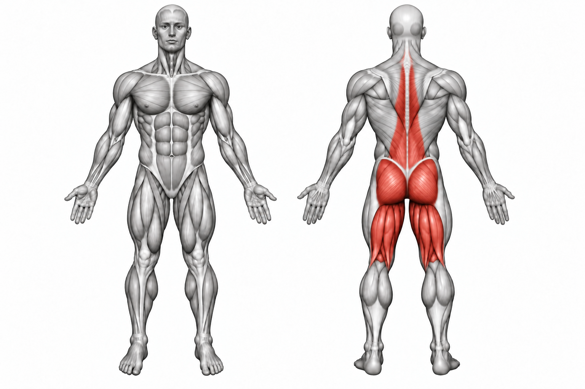

Romanian Deadlift


How to Perform
Stand with your feet about hip-width apart while holding the barbell in front of your thighs. Keep your knees slightly bent and brace your core.
Push your hips backward while lowering the bar close to your legs. Continue until you feel a strong stretch in your hamstrings, then drive your hips forward to return to standing.
Primary Muscles
Hamstrings (Hamstrings) and gluteus maximus (Glutes)
Secondary Muscles
Erector spinae (Lower Back), adductor magnus (Adductors), and trapezius (Traps)